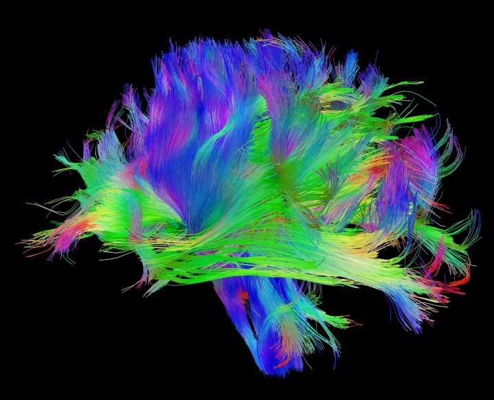

16 커넥톰과 기능적 연결성
Connectome and Functional Connectivity
16.1 커넥톰
16.1.1 신경연결망
뇌 기능은 고립된 신경세포에서 비롯되지 않는다. 또한 하나의 뇌 구조물이 항상 똑같은 기능만을 발휘하는 것도 아니다. 신경계의 기능이 창발하는 곳은 뉴런과 뉴런의 연결패턴이요 그들이 이루는 신경연결망(neural network)1이다. 해부학적 구조물 또한 다른 구조물과의 연결을 통해 합목적적 기능을 창출해낸다. “전체는 부분의 합보다 크다.(The whole is greater than the sum of its part)”라는 경구는 일반시스템 이론2이나 복잡계 이론3을 확립한 현대의 선구적인 학자들이 아니라, 무려 2,500년전에 활약한 아리스토텔레스에게서 비롯되었다.
1 신경연결망(neural network): 생물학적 신경연경말의 개념을 처음 제안한 것은 영국의 철학자인 Alexander Bain (1873)과 미국의 위대한 심리학자인 William James (1890)이다. 이들은 생각과 행동이 뉴런들 사이의 연결에서 비롯된다고 생각하였다. 그러나 이 개념이 유명해진 것은 1943년 미국의 신경과학자인 McCulloch와 Pitts가 신경망의 컴퓨터 모델을 만들어 간단한 연산이 가능하다는 것을 실연한 다음이다. 1949년 Donald Hebb은 “Hebbian learning” 개념을 소개했고, 이는 장기강화(long term potentiation) 모델의 핵심이 되었다.(6-8-1절)
2 일반시스템 이론(general system theory): 시스템이란 상호의존적이고 상호 작용하는 부분들로 구성된 전체, 즉 구성 요소들과 그들의 상호 작용의 합으로 정의된다. 오스트리아의 생물학자인 Ludwig von Bertalanffy에 의해 창안되었다. 이전까지 과학은 개개 부분을 전체에서 고립시킨 후 그 성질을 분석하는 환원주의 원칙에 따라 진행되어왔다. 이에 반해, Bertalanffy는 시스템을 이해하기 위해 더욱 중요한 것은 개개 부분들이 다른 요소들과 맺는 관계라고 지적하였다. 초기에는 인간사회나 기업조직을 이해하고자 하는 데 응용되었으나, 점차 생물학 및 물리 시스템의 이해에도 적용되면서 범위를 넓혀오고 있다.
3 복잡계 이론(complexity theory): 시스템을 이루는 다양한 구성 요소들이 서로 비선형적으로 관계맺고 있는 경우, 그들 전체에서 비롯되는 거시적인 성질은 완전한 질서도 무질서도 아닌 카오스적인 양상을 보인다. 시스템 구성요소에서는 발견할 수 없는 성질이 그들이 구성하는 시스템에서 나타나는 소위 창발현상을 연구하는 이론을 복잡계 이론이라 한다.
뉴런과 뉴런의 연결 역시 서로 다른 층위4에서 바라볼 수 있다. 특정한 대뇌 피질층(cortical layer)(섹션 14.5.2)에 위치한 피라미드 뉴런과 주변의 사이 뉴런이 이루는 국소적 연결을 비롯하여, 동일한 피질 기둥5에 속하지만 서로 다른 층(layer)에 놓인 뉴런 간의 원격 연결, 서로 다른 피질 기둥 간의 연결 등을 고려해 볼 수 있다. 이보다 좀더 거시적으로 보면, 하나의 해부학적 구조와 다른 구조 사이의 연결이 있다. 후자의 규모가 큰 연결들은 다수의 신경 경로(neural pathway)를 구성한다. 이들은 해부학적으로 bundle, fasciculus, tract, commissure와 같은 용어로 불리운다.
4 서로 다른 층위 시스템은 거의 예외없이 계층적 구조를 이루고 있다. 하위 단계의 구성 요소들이 모여 새로운 성질을 발현하면, 그렇게 창발된 현상들이 모여 보다 상위의 구조를 만들고 또 다른 성질을 창발시킨다. 따라서 전체 시스템을 분석하기 위해선 어느 하나의 층위만을 이해해선 부족하며, 상위단계와 하위단계가 맺는 관계까지도 이해해야 한다.
5 피질 기둥(cortical column): 6개의 층으로 구성된 대뇌 피질은 기둥 구조로 조직화되어 있다. 피질 표면의 조그마한 영역과 여기에 수직인 내측 피질은 서로 활발한 시냅스를 이루고 있으며, 하나의 연산단위를 이룬다. 여기서 연산된 신호는 세번째 층(layer III)에서 밖으로 뻗어나가는 축삭돌기를 통해 다른 피질 기둥으로 보내진다.
16.1.2 인간 커넥톰 프로젝트
커넥톰(Connectome)이란 이렇게 거시적인 층위에서 신경 세포들이 연결되어 있는 양상을 종합적으로 표현한 것으로 일종의 뇌 회로도(blueprint)라고 생각할 수 있다. 좀 더 넓은 의미로는 단순히 뇌 내 신경세포 뿐만이 아니라 전신에 분포되어있는 신경세포들 간의 연결망까지도 포함한다. 2009년 시작된 인간 커넥톰 프로젝트(human connectome project)는 게놈 프로젝트 이후 최대의 과학 혁명으로 불린다. 이 연구를 통해 1,000억 개 신경 세포의 연결구조와 활동원리를 파악해서 기억, 의식, 성격 등의 비밀을 밝히고자 한다. 이 프로젝트를 성공시킴으로써 치매, 우울증, 자폐증, 조현병 등의 발병 기전과 치료법을 찾는데 기여할 정보를 얻는다는 목표를 추구하고고 있다.
인간 커넥톰 프로젝트는 한국 혈통의 미국인 과학자인 승현준6에 의해서 더욱 우리에게 친숙하다. 원래 컴퓨터 공학자이던 그는 인간 커넥톰 프로젝트의 출범 이후 그 가능성을 높이 평가하여, 저서 와 공개 강연을 통해 커넥톰의 무궁무진한 잠재력을 역설하였다.
6 Sebastian Seung (1966~): 한국계 미국 컴퓨터 공학자. 40세에 신경생물학으로 전공을 바꾼 후 뇌 영상을 통해 커넥톰 구조를 찾아내는 컴퓨터 프로그램을 만들기 시작한다. 2010년 TED 강연에 출연하여 “나는 내 커넥톰이다(I am my connectome)”이라는 강연을 하였고, 2012년 “Connectome: How the Brain’s Wiring Makes Us Who We Are”이라는 저서를 써서, 커넥톰을 대중에게 알리는데 큰 역할을 하였다. 2018년부터는 삼성전자에서 인공지능 개발팀을 이끌고 있다.
커넥톰을 그리는 것은 확산강조 MRI(diffusion-weighted MRI)를 촬영하는 것으로 시작한다. 아무런 방해물이 없을 때 물 분자는 어느 한쪽으로도 치우침없이 대칭적으로 확산되며 이는 하나의 구(sphere)로 모델링 할 수 있다. 이 상태를 등방성(isotropic)이라고 한다. 만약 미엘린 수초에 의해 신경 경로가 절연되어 있으면, 물 분자가 특정한 방향으로 더 쉽게 확산되는데 이러한 상태를 비등방성(anisotropic)이라고 한다. 비등방성 상태가 되면 구(sphere)가 아니라 타원체(ellipsoid)를 이용하여 모델링하게 되는데, 이러한 방식으로 얻는 이미지를 뇌 확산텐서영상(diffusion tensor imaging, DTI)이라고 한다. 얻어진 영상에 특별한 컴퓨터 알고리즘을 적용하면, 신경 경로를 추적하여 3차원 그래픽으로 표시할 수 있는데, 이를 신경섬유경로영상(fiber tractography)이라고 한다. 미국 국립보건원(NIH)에서 후원하고 있는 인간 커넥톰 프로젝트를 통해 얻어진 다양한 신경섬유경로영상은 웹사이트를 통해 내려받을 수 있으며, 이 자료는 다양한 연구에 활용되고 있다.

16.2 기능적 연결성
DTI를 통해서 얻어낸 자료는 해부학적 커넥톰에 해당한다. 그러나 해부학적으로 밝혀진 경로가 반드시 기능적으로도 의미가 있는 지는 확신할 수 없다. 기능적 연결성(functional connectivity)이란 서로 떨어진 뇌 부위가 기능적으로도 서로 연결되어 있는지를 알아내는 방법이다. 이는 fMRI를 이용하여 안정상태 혹은 과업수행 상태에서 뇌의 각 부위에서 발생하는 동시다발적 신호의 연결성을 분석하여 얻어낸다. 이 작업에는 고도로 복잡한 컴퓨터 알고리즘이 적용되며, 현재까지도 어떤 것이 가장 정확하고 효율적인 알고리즘인지는 결정되지 않았다. 기능적 연결성을 통해 기능적 커넥톰을 제쟉할 수 있다. 기능적 커넥톰은 해부학적 커넥톰의 부분집합이라는 견해, 즉 해부학적으로 연결되어 있어야 기능적 연결도 가능해진다는 견해가 있지만, 반드시 그렇지만은 않다는 이론도 있다.[1] 뇌의 신비를 벗겨내기 위해 좀더 중요한 것은 기능적 커넥톰이겠지만, 이를 매핑하는 과정은 해부학적 커넥텀의 경우보다도 훨씬 더 어려운 과업이다.[2]
16.3 커넥톰 핑거프린트
커넥톰은 개인마다 독특한 연결 패턴을 알 수 있도록 해준다. 이러한 패턴을 일종의 지문(fingerprint)에 빗대어 커넥톰 핑거프린트(connectome fingerprint)라고 한다. 커넥톰 핑거프린트는 개인마다 다르며, 시간이 지나도 크게 변하지 않는다. 핑거프린트를 사용하여 특정 개인의 신원을 확인할 수 있을 정도이며, 특히 이 패턴은 그 사람의 인지 기능과 상관이 있다.[3,4]
당연한 이야기겠지만 개인마다 커넥톰 핑거프린트가 다르다면, 이를 그룹과 그룹 간에도 비교할 수 있을 것이다. 환자와 대조군, 혹은 각양 각색의 진단을 가진 환자군의 핑거프린트를 서로 비교하면, 각 진단군에 독특한 핑거프린트를 얻어낼 수 있을 것이다.[5] 다만 이러한 연구의 어려운 점은, 커넥톰 핑거프린트와 대응하는 표현형(phenotype)이 대체 어떤 것인지 미리 알 수 없다는 점이다. 주지하다시피, 정신과 진단이란 생물학적 병태생리와 일대일로 대응하지 않는다. 진단의 경계는 너무나 느슨하며고, 진단을 범주적(categorical diagnosis)으로 내려야할 지 차원적(dimensional diagnosis)으로 내려야할 지도 의견이 모아지지 않았다. 만약 정신병적 증상에 해당하는 핑거프린트가 있다면 이는 조현병, 양극성 장애, 정신병적 우울증을 막론하고 나타날 것이다. 인지기능과 관련된 핑거프린트가 있다고 해도, 치매와 조현병을 구분하기 어려울 지 모른다.[6]
커넥톰 연구를 통해 세가지 광역 네트워크의 구조가 제시되었다. 첫번째, 전두-두정엽 조절 네트워크(frontoparietal control network, FPCN)는 전전두엽과, 하두정소엽(inferior parietal lobule), 대상회의 중앙부위(middle cingulate gyrus)을 중심으로 연결되며, 과거 전전두엽이 맡고 있다고 여겨진 작업 기억과 집행 기능을 행사한다. 둘째, 현저성 네트워크(salience network)는 전측 섬엽(anterior insula)과 전측 대상회(anterior cingulate gyrus)로 구성되며, 의사소통, 사회적 행위, 자기 의식 등과 관련된 복잡한 기능을 맡는다. 혹자는 이를 대상-판개 네트워크(cingulo-opercular network, CON)라고 부르기도 한다. 마지막으로 디폴트 모드 네트워크(default mode network, DMN)가 있다. 이는 내측 전전두엽(medial prefrontal cortex), 후측 대상회(posterior cingulate gyrus) 그리고 각회(angular gyrus)로 이루어진다. DMN은 아무런 과업도 수행하지 않고 절대적 안정 상태에 있는 뇌에서 활성화되는 부분인데, 자아감이나 과거 회상, 미래에 대한 예측, 마음 이론, 도덕 판단 등 자기(self)와 관련된(self-referential) 기능을 행사할 때 사용된다고 여겨진다.(그림 16.1)[7]

이런 식으로 커넥톰에서 다루어지는 네트워크는 국소적 미세 연결부터 광역 네트워크까지 다양한 층위로 존재하며[8], 이에 대응하는 표현형 역시 다양한 층위로 고려될 수 있다. 광역 네트워크 이상에 해당되는 표현형은 지엽적인 진단명을 넘어서는 좀더 높은 층위에 해당할 것이다. 이러한 층위의 결정이 커넥톰 연구의 걸림돌로 남아있다.
16.4 조현병의 커넥톰 이상
16.4.1 FPCN과 인지적 조절
이러한 어려움에도 불구하고, 최근에는 정신과 진단에 따라 세가지 광역 네트워크(FPCN, CON, DMN)에 어떤 변화가 있는 지를 알아내려는 연구가 활발히 진행되고 있다. Baker 등[6]은 조현병과 기분 장애 환자 모두에서 FPCN의 연결성이 떨어지는 것이 발견되었으나, DMN의 연결성 저하는 조현병 그리고 정신병적 증상이 동반된 기분 장애 환자에서만 발견되었다고 하였다. 그러나 동시에 FPCN의 연결성 저하가 PANSS로 측정한 양성 증상과 비례 관계에 있었기 때문에, FPCN 역시 정신병적 증상 발현에 기여하는 것 같다고 하였다. 또 다른 연구자들은 조현병의 다유전자 위험 점수(PRS, 섹션 8.6)가 FPCN과 DMN의 전반적 연결성과 역비례 관계에 있다고 하였다.[9]
유사한 연구에서 반복적으로 발견되는 조현병 환자의 FPCN 이상은, 조현병 증상이 인지적 조절(cognitive control)이라는 집행 기능의 결함에서 비롯된다는 것을 시사한다. 인지적 조절이란 의식적으로 인지적 자원을 당면한 과제에 집중시키는 능력을 의미한다.[10] FPCN은 그 안에 포함된 하위 구조들간의 왕성한 연결 말고도, 다른 광역 네트워크와의 활발한 연결을 특징으로 한다. 집행 기능이라는 이름에 걸맞게, 다양한 네트워크 들의 기능을 동조시키거나 조율한다. 그래서 FPCN을 기능적 허브(functional hub)라고 부르기도 한다.[11] 특히 FPCN은 학습/경험과 무관한 유동성 지능7과 관계가 깊다.[12] 그런데 조현병 환자는 FPCN과 CON 혹은 DMN과의 연결성이 현저히 떨어진다.[13]
7 유동성 지능 (fluid intelligence): 유동성 지능은 추리능력, 연산능력, 기억, 도형지각 능력 등 경험과 무관한 지능이고, 대비되는 결정형 지능(crystallized Intelligence)은 어휘, 일반상식, 언어이해, 판단과 같이 경험, 훈련 및 교육 등의 환경적 요인에 의하여 발달, 축적된 지능을 말한다.
조현병 환자 뿐 아니라 우울증, 불안장애, 강박증 등에서도 FPCN의 연결성이 떨어지는 것이 발견되지만, 두 경우는 좀 차이가 난다. Cole 등[14]은 이를 일차성과 이차성 기능 저하로 나눠 설명한다. 일차성 기능 저하는 그야말로 FPCN을 구성하는 회로 자체나 신경 세포의 손상 때문에 기능이 떨어지는 경우이다. 이에 비해, 이차성 기능 저하는, 회로 자체의 손상은 없으나 우울/불안 등의 다른 증상을 억누르기 위해 FPCN의 자원을 소진한 나머지, 정작 인지기능에 사용할 여지가 남지 않은 경우를 말한다. Cole 등은 FPCN의 일차성 기능 저하는 조현병과 양극성 장애의 특징이라고 주장한다.[14] 이상을 종합하면, 조현병 환자의 뇌는 FPCN의 일차적 기능 저하를 특징적으로 보이며, FPCN 내부의 연결성이 떨어질 뿐 아니라 FPCN과 다른 광역 네트워크와의 연결성도 떨어진다. 이 상태는 유동성 지능을 떨어뜨릴 뿐 아니라, CON과 DMN의 활성을 조율시키지 못하여 정신병적 증상을 유발하기도 한다.
16.4.2 CON과 현저성
FPCN이 과업을 시작하는데 필요한 초기 인지적 조절을 담당한다면, CON은 목표를 놓치지 않도록 유지하며, 오류가 생겼을 때 행동을 조절하는 역할을 맡고 있다.[15] 또한 내부로 부터 혹은 외부로 부터 전달되는 신호 중에서 현저하다고 여겨지는 신호를 탐지, 가공, 통합하는 역할을 맡는다.[16] CON의 연결성은 주어진 과제의 난이도가 높아질수록 강해지는 경향을 보인다.[13] 일부 연구에서는 조현병 환자에서 CON의 내부 연결성이 정상 대조군보다 낮으며, 그 정도는 음성 증상과 음의 상관관계를 보인다고 한다.[17] 또 다른 연구에서는 정신병적 증상을 잠깐이나마 경험했던 일반인을 대상으로, 증상의 심각도와 CON 연결성을 비교했더니 역시 음의 상관관계가 관찰되었다.[18] CON의 연결성이 단순히 인지 기능 저하를 반영하는 것인지, 망상의 기초가 되는 것인지는 아직 확실하지 않다.
비정상적 현저성 이론(Section 13.4)은 망상을 형성하는 과정을 설명하는 주요 이론 중 하나이기 때문에, CON에 대한 관심은 여전히 높은 편이다. 더구나 CON은 FPCN과 DMN 사이를 매개하는 일종의 스위치 역할을 하기 때문에 더욱 중요성이 강조되었다.[19] 앞에서도 잠깐 언급되었지만 FPCN은 목표 지향적으로 과제를 해결해야할 때 활성화되는 네트워크인 반면, DMN은 자극이나 과제가 없는 상태에서 정신내적 세계에 머무를 때 활성화된다. 안정상태에서 DMN이 활성화되어 있는 개체가 무언가 평소와 다른 자극을 감지하면, CON은 이 자극이 해결을 요구하는 가치가 있는지 아니면 무시해도 되는지를 결정한다. 만약 전자라면 DMN을 잠시 비활성화하는 대신, FPCN을 활성화시킴으로써 새로운 과제를 해결하고자 한다. 조현병 환자는 외적 세계와 내적 세계를 혼동하는 경향이 있으며, 무시해도 될 자극과 중요한 자극을 걸러내지 못한다. 이러한 인지적 메커니즘의 오작동이, 온전하지 못한 CON 때문인지도 모른다. 따라서 연구자들이 CON의 이상을 확인하고자 애쓰는 것도 무리가 아니다.[16]
16.4.3 DMN과 자기 관련성
DMN이란 개념은 2001년 Raichle에 의해 제안되었다.[20] fMRI 연구를 할 때는 특정 과업을 주었을 때 활성화되는 뇌 영역을 찾기 위해 아무 과제도 주지 않은 안정상태(baseline)와 비교하게 되는데, 이 안정상태에서도 특정 뇌 부위가 독특한 패턴으로 활성화된다는 것이 DMN을 찾게된 계기가 되었다. DMN을 이루는 뇌 구조물은 예로부터 조현병과 관련하여 많이 연구되던 부위들이고, DMN이 담당하는 뇌 기능 역시 조현병 증상과 연관이 있기 때문에 일찌기 조현병과의 관련여부가 연구되었다.[21]
조현병과 관련한 DMN 이상을 최초로 보고한 연구자는 Garrity 등[22]이다. 이들은 DMN 활성을 유도하는 인지과제를 주고, 뇌 대사가 활성화되는 부위와 주파수 특성을 측정한 후 환자군과 정상 대조군을 비교하였다. 그 결과 두 군 사이의 유의한 차이를 발견해내었다. 같은 해 Bluhm 등[23]은 조현병 환자는 DMN의 중심 구조인 후측 대상회(posterior cingulate gyrus)와 기타 영역들 간의 연결성이 떨어진다고 하였다. 하지만 혼란스럽게도, 이후 DMN의 활성 정도나 기능적 연결성을 환자군과 대조군 사이에 비교하는 연구들이 이어졌으나, 일관된 결과를 얻지는 못하였다.[21]
실험결과를 떠나서 연구자들은, 안정상태에서는 DMN이 활성화되어 있다가 현저성(salience)을 지닌 자극이 감지되면 순간적으로 DMN이 비활성화되면서 FPCN으로 활성이 옮겨간다고 생각하며, 이러한 역동적 전환이 제대로 이루어지지 않는 것이 조현병 환자의 특성이라 여긴다. FPCN과 DMN은 서로 음의 상관관계(anti-correlation)를 갖는 것이 정상적인데[24], 조현병 환자에서는 이러한 음의 상관관계가 덜 뚜렷하게 나타난다.[25,26]
DMN의 활성과 연결성은 서로 정비례하며, 양성 및 음성 증상과도 유의미한 상관관계를 보인다.[25], 따라서 DMN의 과활성과 과연결성을 조현병과 결부시키는 연구자가 많은 편이다.[27] 이러한 DMN의 과활성과 과연결성은 약물을 한번도 사용한적이 없는 환자에게도 나타날 뿐더러, 발병하지 않은 환자 가족에게서도 발견할 수 있다.[28,29] DMN의 주된 내용인 자기-관련성(self-referential)은, 환자들이 외부의 중립적 자극을 자꾸만 자신과 관련지어서(idea of reference) 생각하는 경향과 연결되는 것 같다.[30]
한편 연결성의 이상은 조현병 환자에게 흔히 동반되는 연성 신경학적 징후(neurological soft signs)와도 연관이 있다고 한다.[31] 적지 않은 연구자들은 DMN의 활성 및 연결성을 조현병의 대표적인 생물학적 지표의 하나로 간주하고 있다